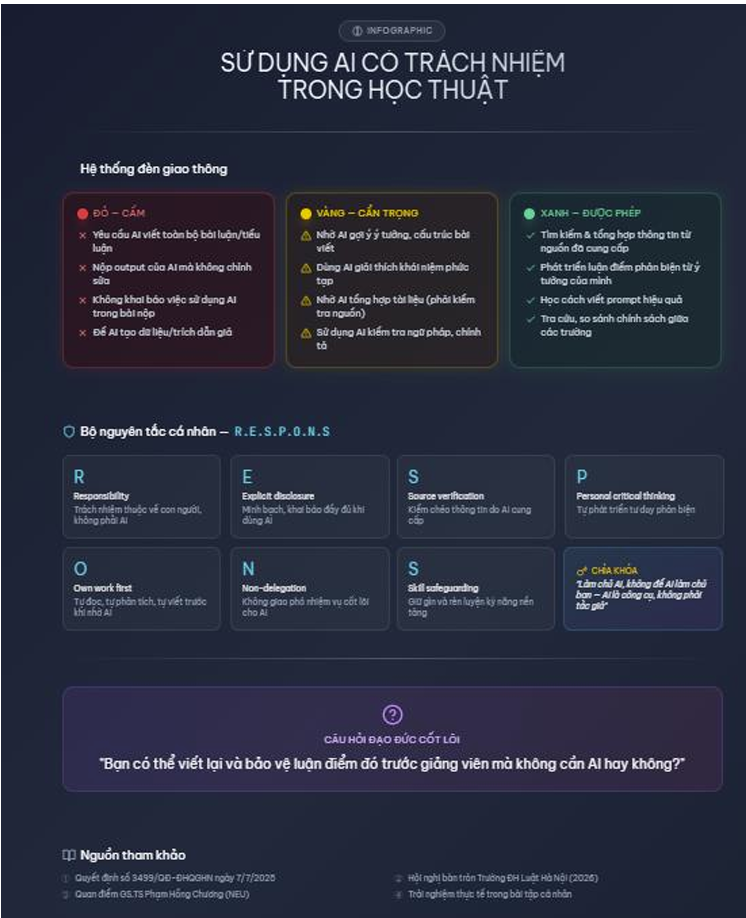

Họ và tên: Nguyễn Quốc Cường
Lớp: K70A — AI4
Mã sinh viên: 25022799
Theo Quyết định số 3499/QĐ-ĐHQGHN ngày 7/7/2025, ĐHQGHN đã chính thức đưa học phần "Nhập môn công nghệ số và ứng dụng trí tuệ nhân tạo" vào giảng dạy bắt buộc cho toàn bộ sinh viên đại học chính quy từ khóa 2025.
| Nội dung | Quy định cụ thể |
|---|---|
| Tên học phần | Nhập môn công nghệ số và ứng dụng trí tuệ nhân tạo |
| Số tín chỉ | 3 tín chỉ (45 giờ) |
| Hình thức | Trực tuyến 100% |
| Tính chất | Bắt buộc với mọi sinh viên hệ chính quy |
Điểm đáng chú ý là học phần được thiết kế để trang bị cho sinh viên nhận thức về đạo đức, liêm chính học thuật, an toàn số và trách nhiệm khi ứng dụng AI trong môi trường học thuật.
Đại học Kinh tế Quốc dân (NEU): Cho phép sinh viên sử dụng AI, ChatGPT, không ngăn cấm. GS.TS Phạm Hồng Chương nhấn mạnh sinh viên phải "làm chủ công nghệ, làm chủ quy trình".
Trường Đại học Luật Hà Nội: Đã tổ chức hội nghị chuyên đề, thống nhất 4 nguyên tắc cốt lõi: trách nhiệm học thuật thuộc về con người; minh bạch khi dùng AI; kiểm chứng thông tin; không khai báo AI là vi phạm liêm chính học thuật.
| Tiêu chí | ĐHQGHN | NEU | Trường ĐH Luật HN |
|---|---|---|---|
| Hình thức | Bắt buộc học AI từ năm nhất | Cho phép sử dụng, không cấm | Có hội thảo chuyên đề |
| Trọng tâm | Kỹ năng + đạo đức | Làm chủ công nghệ | Liêm chính học thuật |
| Mức độ chính thức | Quyết định, học phần bắt buộc | Tuyên bố chính sách | Thảo luận, định hướng |
Nhận định: ĐHQGHN có bước đi bài bản nhất khi đưa nội dung này thành học phần bắt buộc ngay từ năm nhất, tích hợp cả kỹ năng sử dụng lẫn đạo đức học thuật.
Nhiệm vụ được chọn: Viết bài luận phân tích chủ đề "Tác động của Nghị quyết 80/NQ-TW đến phát triển công nghiệp văn hóa Việt Nam" (1500 từ, có trích dẫn và phân tích phản biện).
Tôi đang viết bài luận về "Tác động của Nghị quyết 80/NQ-TW đến phát triển công nghiệp văn hóa Việt Nam". Hãy tổng hợp những điểm chính của Nghị quyết liên quan đến công nghiệp văn hóa, bao gồm: định nghĩa, mục tiêu cụ thể (chỉ tiêu GDP, thương hiệu), và các giải pháp đột phá. Cung cấp dưới dạng gạch đầu dòng, có trích dẫn điều khoản cụ thể.
Cách tôi xử lý: Kiểm tra chéo các chỉ tiêu GDP (7% đến 2030, 9% đến 2045) với nguồn chính thống, thấy chính xác. Bổ sung thông tin về mốc thời gian và chỉ tiêu thương hiệu. Loại bỏ phần AI đề cập về "chính sách ưu đãi thuế" vì không có trong văn bản gốc.
Dựa trên thông tin về Nghị quyết 80/NQ-TW, hãy giúp tôi xây dựng 3 luận điểm phản biện về tính khả thi của mục tiêu công nghiệp văn hóa đóng góp 7% GDP vào 2030. Mỗi luận điểm cần có lý do và dẫn chứng. Đây là bước phát triển ý tưởng cho bài luận, không phải kết luận cuối cùng.
Cách tôi xử lý: Giữ lại cả 3 luận điểm vì có giá trị phản biện tốt. Chỉnh sửa luận điểm 2 bằng cách bổ sung dẫn chứng cụ thể về tỷ lệ đầu tư cho công nghiệp văn hóa của Hàn Quốc. Tự viết phần kết luận cho bài luận vì đây là phần thể hiện quan điểm cá nhân.
✍️ Tuyên bố sử dụng AI trong bài luận:
"Trong quá trình thực hiện bài luận này, tôi có sử dụng công cụ AI (ChatGPT) để hỗ trợ: (1) tổng hợp các điểm chính của Nghị quyết 80/NQ-TW; (2) gợi ý các luận điểm phản biện. Tất cả nội dung đã được tôi kiểm chứng, chỉnh sửa và bổ sung từ nguồn chính thống. Tôi hoàn toàn chịu trách nhiệm về nội dung bài viết."
| Giai đoạn | Vai trò của AI | Vai trò của tôi | Mức độ hỗ trợ |
|---|---|---|---|
| Tìm kiếm/tổng hợp | Tổng hợp, gạch đầu dòng | Kiểm tra, bổ sung, loại bỏ | Hỗ trợ chính |
| Phát triển luận điểm | Gợi ý ý tưởng | Chọn lọc, điều chỉnh | Hỗ trợ thứ cấp |
| Viết kết luận | Không tham gia | Tự viết | Không hỗ trợ |
| Kiểm tra/trích dẫn | Không tham gia | Tự kiểm tra chéo | Không hỗ trợ |
| Hỗ trợ hợp lý (nên làm) | Gian lận học thuật (không được làm) |
|---|---|
| Dùng AI tìm kiếm, tổng hợp tài liệu | Yêu cầu AI viết toàn bộ bài luận |
| Nhờ AI gợi ý cấu trúc, ý tưởng | Nộp output của AI mà không chỉnh sửa |
| Dùng AI kiểm tra ngữ pháp, chính tả | Không khai báo việc sử dụng AI |
| Hỏi AI để hiểu rõ khái niệm phức tạp | Để AI tạo dữ liệu/trích dẫn giả |
Nguyên tắc xác định ranh giới: AI là công cụ, không phải tác giả. Mọi ý tưởng và lập luận cốt lõi phải do người học tạo ra.
Theo thống nhất tại Hội nghị Trường Đại học Luật Hà Nội: "Trách nhiệm học thuật luôn thuộc về con người. AI không thể và không được coi là tác giả hay đồng tác giả." Việc không công khai sử dụng AI được xem là vi phạm chuẩn mực minh bạch và liêm chính học thuật.
Tích cực: Tăng hiệu suất làm bài, cá nhân hóa quá trình học, phát triển kỹ năng tự học, tiết kiệm thời gian cho các nhiệm vụ giá trị cao hơn.
Tiêu cực: Nguy cơ suy giảm tư duy phản biện, ỷ lại công nghệ, đạo văn, và tiếp nhận thông tin sai lệch từ AI.
Tôi luôn là người chịu trách nhiệm cuối cùng về nội dung học thuật mà tôi nộp. AI chỉ hỗ trợ, không thay thế tư duy của tôi.
Tôi sẽ luôn khai báo rõ ràng việc sử dụng AI trong các bài tập, bài luận - mô tả cụ thể công cụ đã dùng và mục đích sử dụng.
Tôi kiểm tra chéo mọi thông tin, dữ liệu, trích dẫn do AI cung cấp với nguồn chính thống trước khi sử dụng.
Tôi dùng AI để gợi ý ý tưởng, nhưng việc đánh giá, chọn lọc và phát triển luận điểm là do tôi thực hiện.
Tôi dành thời gian tự đọc, tự phân tích, tự viết - không để AI làm thay các kỹ năng nền tảng.
Tôi không cung cấp thông tin cá nhân, dữ liệu nhạy cảm cho các công cụ AI.
Tôi chủ động học kỹ năng viết prompt, hiểu rõ ưu điểm và giới hạn của AI để tận dụng đúng mức.

Qua bài tập này, tôi nhận thấy việc sử dụng AI trong học tập là xu hướng tất yếu, nhưng cần được thực hiện có trách nhiệm. Các trường đại học tại Việt Nam đang từng bước xây dựng chính sách và hướng dẫn cụ thể. Cá nhân tôi sẽ tuân thủ bộ 7 nguyên tắc đã xây dựng, đồng thời tiếp tục cập nhật và điều chỉnh phù hợp với sự phát triển của công nghệ và quy định của nhà trường.
📅 Hoàn thành: 15/04/2026 | Môn: Nhập môn Công nghệ số & Ứng dụng Trí tuệ nhân tạo | MSSV: 25022799